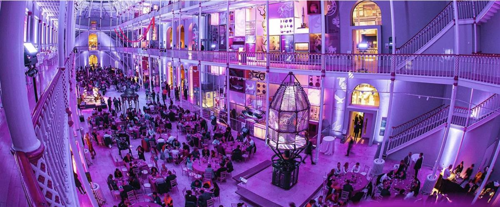

6 museums successfully cementing relationships with their audiences
May 03 2022 By Tim Deakin
By thinking outside the box, these cultural establishments have been able to take visitor and audience engagement to new levels.
The old adage of “If a tree falls in the forest and no ears are around to hear it, does it make a sound?” comes to mind when considering the relationship between museums and their visitors. After all, if an exhibition is displayed in a gallery space, and no one comes to see it, what is the purpose of its curation?
Engagement and enrichment are the life blood of any cultural establishment, and one of the main priorities of museums and galleries is to ensure that visitor numbers grow over time. This means that existing patrons are encouraged to return again and again, whilst new audiences are enticed through the doors through a combination of marketing efforts and word of mouth.
In Rethinking the Museum and Other Meditations (1990), Stephen Well identifies explains that while the function of a museum is to display collections, the purpose of a museum is to make these collections both appealing and accessible in a way that’s beneficial to the public.
This is at the core of what we term “Audience Development” – a relationship-building strategy that brings together an institution’s workforce to build a loyal, advocating following both in person and (increasingly) via online channels.
With that in mind, let’s take a look at how museums around the world are taking innovative steps to nurture their audiences.
National Museum of Scotland – appealing to all ages
For some museums, one of the goals of effective audience development is to create a multi-generational visitor base. When research suggested that younger people – i.e. those falling in the Generation Y or Millennial bracket – weren’t visiting museums as often as their elders, the National Museum of Scotland set out to be more inclusive in their scheduling.

The result was the creation of ‘Lates’ – night-time thematic events focusing on hedonistic activities and experimental escapism. These sessions concentrated on the notion of ‘edutainment’ – history, art and culture made fun.
Jamtli – participation and involvement
While the National Museum of Scotland may have focused on creating entertaining displays, Jamtli in Östersund, Sweden has used gamification in order to bring the visitors directly into the folds of the exhibition.
Gamification typically involves the implementation of modern technology in order to bridge the gap between art and the viewer, but Jamtli took another approach. The open-air museum allows visitors to discover Swedish folklore for themselves through story-telling and roleplaying. It effectively acts as a functional village that visitors can immerse themselves in, complete with actors who regale them with tales of a certain era.
Diefenbunker – games and trends
Escape Rooms have seen an explosion in popularity over recent years, fast becoming the activity of choice for adventure fans and problem solvers. And since 2018, Diefenbunker has used its popularity in order to cement their own ties to their audience, and drive new people through their doors
The Diefenbunker in Ottawa, Canada offers an escape game adventure for visitors which takes place across the whole museum, rather than in a single room. This not only makes it the biggest escape game in the world, but it also gives visitors the chance to get to know the museum in a completely new way – one they won’t forget in a hurry.
The Guggenheim – accessibility for all
While entertainment and showmanship are important components of audience development, they aren’t the only aspects involved. Accessibility in its most practical form is also essential for allowing as many people as possible to enjoy what a museum has to offer. It’s all too common for visual/hearing/physically impaired persons to avoid museums due to a lack of confidence in the accessibility of its services, and this can create a divide between museums and would-be visitors.
Of course, museums around the world have taken great strides in recent years to enhance their accessibility credentials – both on-site and online. But elevating those accessibility initiatives to the next level to ensure a truly empowering experience can be invaluable in driving audience engagement for the long term.
A perfect example of this is the Guggenheim, which has established Mind’s Eyeprograms to provide unique sensory experiences for visitors with visual impairments. They also offer a social narrative guide, which explains to people with sensory processing disorders what they can expect from their visit.
The Imperial War Museum – giving people what they want
Like many museums, the Imperial War Museum North in Manchester is a themed museum. By offering access to war artefacts, and exploring conflict in all its guises and gore, it aims to help the public experience the many sides of war in a tangible and interesting way.
When it comes to museums with a distinct theme, giving an audience what they want is all the more important, as it’s easy to fall into a niche and simply stick to it. Over the years, the Imperial War Museum has updated and expanded its collections across its sites in order to reflect the turning tides of public perception and interest, focusing on more multi-cultural stories and artefacts. The institution provides a wide variety of audio-visual and interactive experiences in order to show as many glimpses of war as possible.
The Museum in the Sky – catching visitor attention
Sometimes, a big statement is what’s needed in order to really capture public imagination and garner interest in a museum. This was certainly the case for the world’s first and, as yet, only flying museum in Saudi Arabia.
The museum incorporates a plane journey, highlighting many of the archaeological attractions that lie between the Saudi Capital and the ancient city of Al-Ula. The latter is already known throughout the country as one of the most historic cities in the Arab Peninsula, and this unique approach allows visitors to get closer than ever before.
By thinking big, starting small and acting in the audiences’ best interests, museums can expand their horizons and create even stronger relationships with the people who keep their exhibitions alive.
The MuseumNext Growing Audiences Summit will be held from 9th – 11thMay, and will feature inspiring ideas and case studies from those championing audience development in museums and galleries. Click here to book your tickets now, to make sure you don’t miss out.
SOURCE: MUSEUMS NEXT